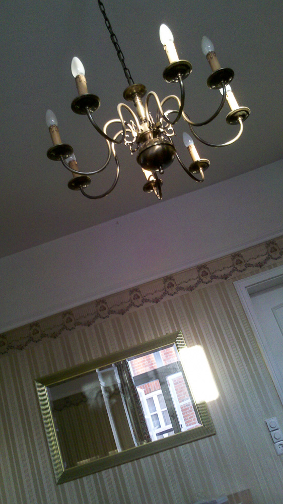
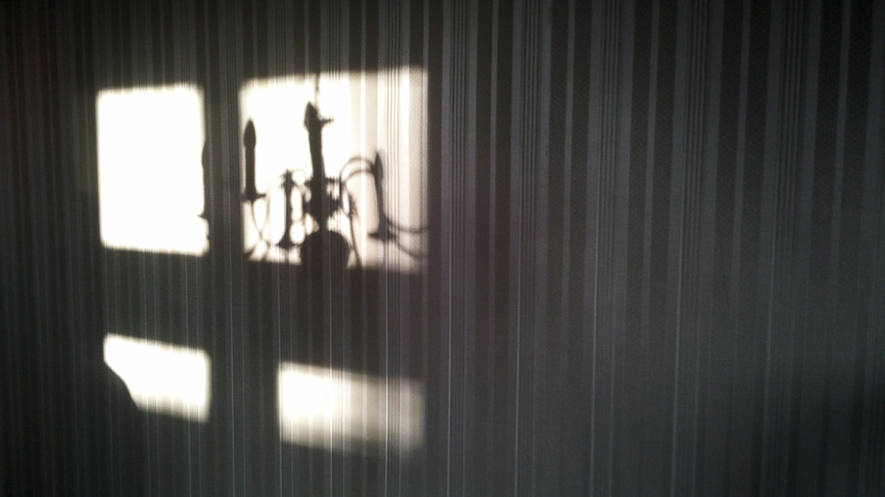
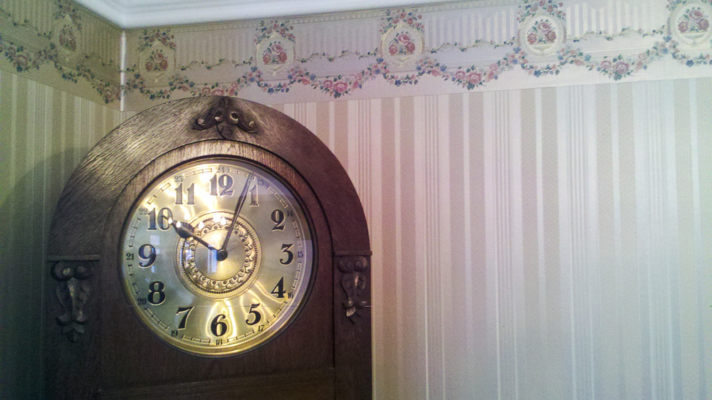
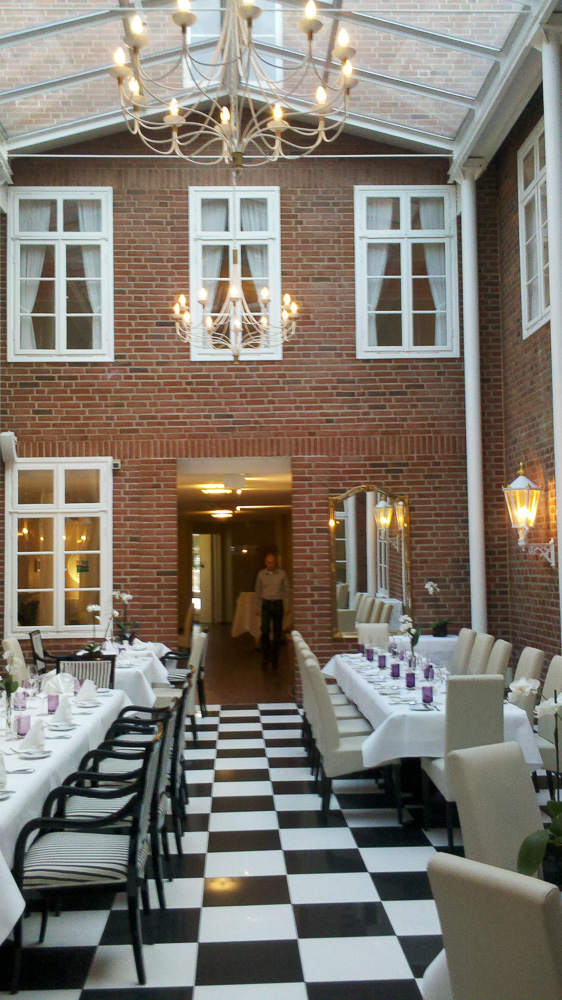
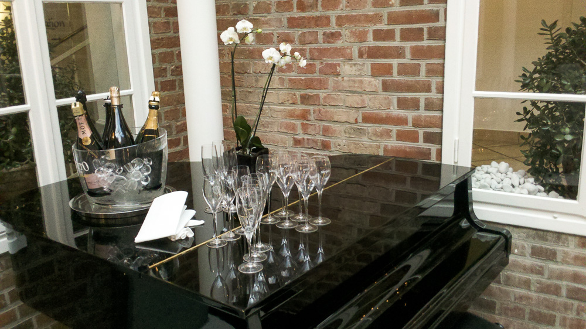
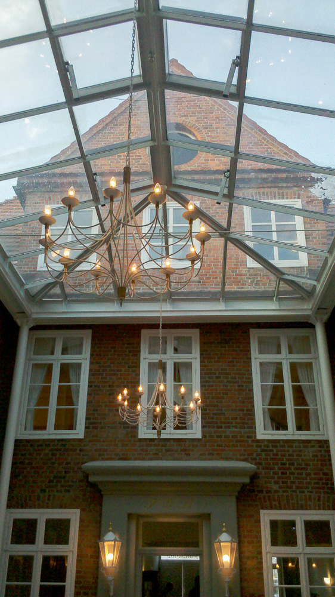
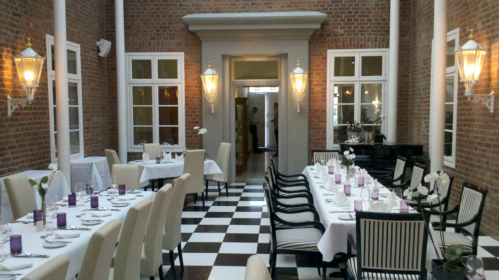
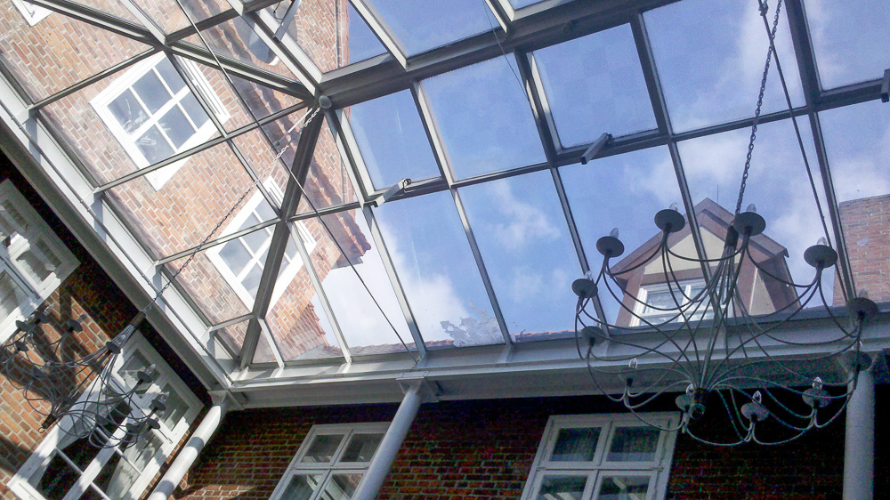
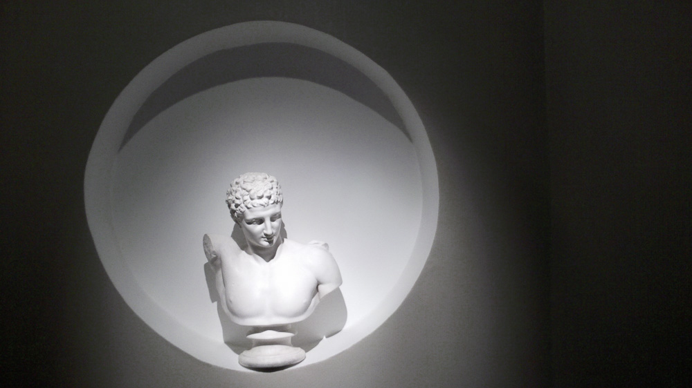

Hotel de Winter in Ludwigslust
Eigentlich bin ich ein Pixelpeeper. Meine DSLR habe ich mir zugelegt, um hochauflösende Bilder auch in kritischen Situationen zu schießen. Doch eine große Kamera nimmt auch viel Platz ein, und nicht immer will ich eine große Tasche mit mir herumschleppen.
So war es auch die letzten zwei Tage. Ich war auf einem Seminar in Ludwigslust und hatte anschließend noch einen abendlichen Termin in Berlin - mehr Gepäck als die kleine Reisetasche wollte ich nicht dabei haben. Also habe ich wie schon vor zwei Wochen am Liepnitzsee auf mein Handy zurückgegriffen, um die Kulisse des Seminars zu dokumentieren.
Das Handy ist, was die Bildqualität angeht, das komplette Gegenstück zu meiner DSLR. Kleiner Sensor, viel Rauschen, und eigentlich nur bei Sonnenlicht zu gebrauchen. Die gemachten Bilder sind, selbst wenn optimale Bedingungen herrschen, höchstens in kleineren Aufösungen (um 1000 Pixel Breite) zu gebrauchen. Für mein Blog ist dies jedoch gerade ausreichend.
Zudem habe ich die Handykamera nicht auf das Standard-3:2-Format eingestellt, sondern auf das bildschirmfüllende 16:9-Seitenverhältnis - als Fan der Panorama-Fotographie bin ich den breiten Bildformaten von Natur aus zugeneigt. So hatte ich die letzten Tage richtig Spaß, mit dieser ungewohnten Bildkomposition und der Festbrennweite zu experimentieren und herumzuspielen. Gerade das säulenartige Hochformat ist dabei sehr herausfordernd.
Mit meiner DSLR hätte ich ganz andere Bilder gemacht - u.a. von der Nachtwanderung durch Ludwigslust. Aber es hat mich überrascht, wieviel Freude ich an der Entdeckung meines Handy für die Fotographie hatte. Dies werden wohl nicht die letzten Bilder aus dieser Kamera sein!
        